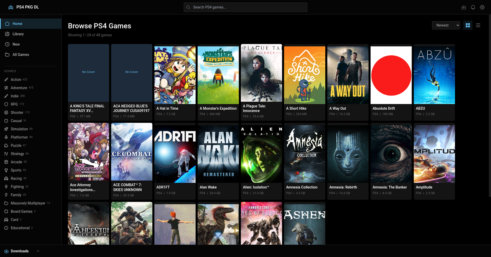
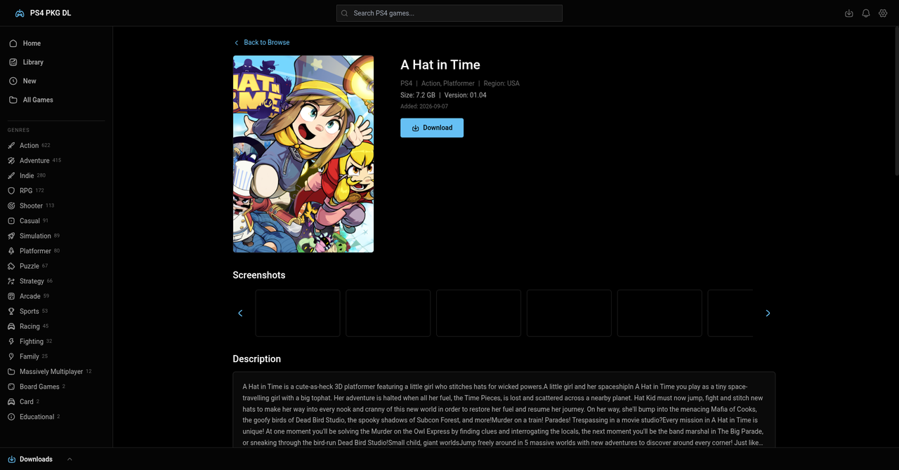
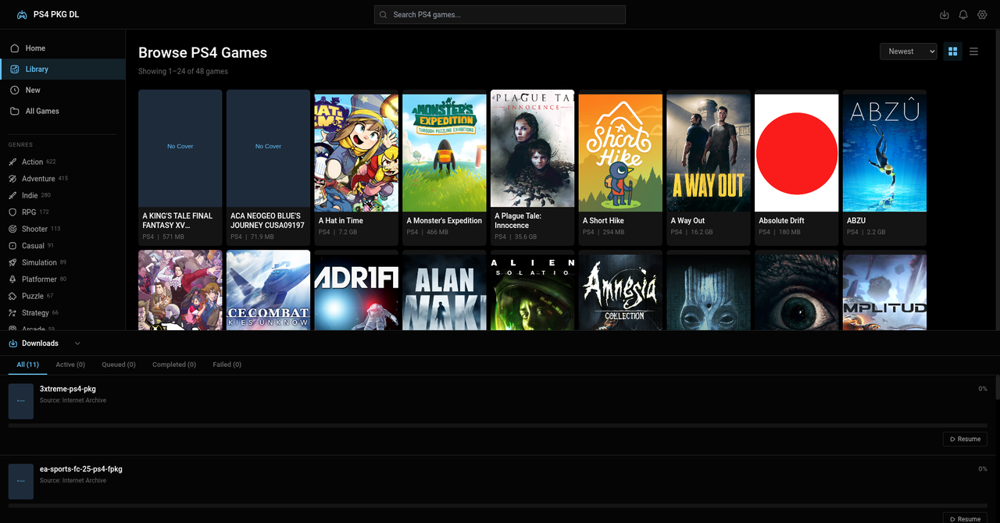

v1.0.0 — First stable release (Linux AppImage)
- Update channel defaults to Stable; pre-releases one click away.
- Automated backend + renderer test suites and app-wide safety nets.
Browse your own PS4 PKG catalog, enrich it with artwork and metadata, download packages with pause/resume and history — free desktop app for Linux.
Everything you need to manage a personal PS4 package library on the Linux desktop.
Add several games.json URLs or local files, enable/disable per source, refresh individually.
Descriptions, genres, screenshots and trailers cached locally, with Fill-missing / Refresh-all scopes.
Games the matcher can’t place land in a “Needs attention” list with RAWG candidates; pin the right match or ignore them persistently.
Queue, pause/resume, cancel/retry, progress and ETA, plus login-gated archive.org items via your own cookie.
Automatic check on launch with prompt, download progress and restart-to-install; Pre-release/Stable channel choice in Settings → About.
A “What’s new” dialog on every update, re-openable from Settings → About.
The app in action: browse, inspect, and download.



One command installs a launcher entry. Re-run it any time to update.
curl -fsSL https://cdn.jsdelivr.net/gh/aor-rex/ps4-pkg-dl@main/install.sh | bashcurl -fsSL https://raw.githubusercontent.com/aor-rex/ps4-pkg-dl/main/install.sh | bashGrab the .AppImage from the Releases page, make it executable, and run it:
chmod +x PS4-PKG-Downloader-*.AppImage
./PS4-PKG-Downloader-*.AppImageRecent releases. Full changelog on GitHub.
Short answers to the questions every new user asks.
The app ships with no catalog. You add your own games.json URL (FPKGi format) or local file under Settings → Library. Maintained sources (mirror + curated extras) live in the companion ps4-pkg-catalog repo.
Only for artwork and metadata enrichment, and it’s optional. Paste a free key from rawg.io/apidocs and press Start backfill; browsing and downloading work without it.
Some archive.org items are login-gated. The app can’t log in for you, so you supply your own login cookie under Settings → Library → archive.org login and the app reuses it for those downloads.
Everything lives under ~/.config/ps4-pkg-dl/ (XDG-aware): settings, the metadata cache database, your pinned/ignored matches, uploaded catalogs, and logs. Note the RAWG key and archive.org cookie are stored in plaintext — don’t share the folder.